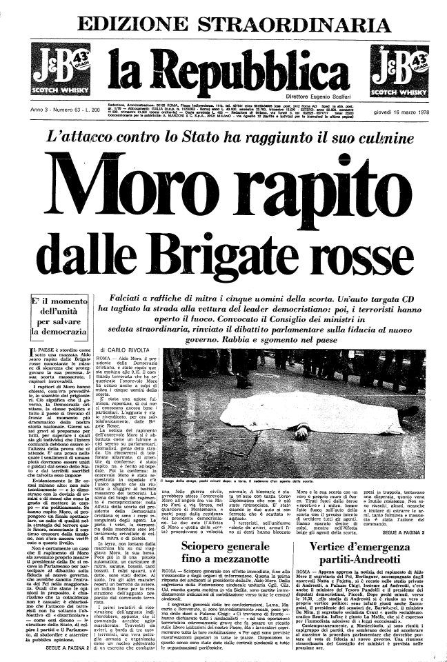

Rapimento dell'onorevole Aldo Moro (16 marzo 1978)

Riproduzione digitale della prima pagina de La Repubblica datata 17 marzo 1978 che annuncia il rapimento dell'onorevole Aldo Moro, presidente della Democrazia Cristiana, per mano delle Brigate Rosse.
Scheda Descrittiva
| Titolo | Prima pagina de La Repubblica del 17 marzo 1978 |
|---|---|
| Identificatore | 0390-1076:1978-03-16 |
| Autore / Ente | Archivio storico de La Repubblica. |
| Data | 17 marzo 1978 |
| Metadati XML | Scarica / Visualizza Metadati XML |
| Luogo | Roma (Vedi sulla mappa) |
| Soggetto / Tema | Rapimento Moro; Anni di Piombo; Brigate Rosse |
| Persone Correlate | Giulio Andreotti |
Storia
La mattina di giovedì 16 marzo 1978, Roma si preparava a vivere una giornata politicamente molto importante. Alla Camera dei deputati era infatti prevista la discussione sulla fiducia al nuovo governo presieduto da Giulio Andreotti, un passaggio fondamentale nella storia della cosiddetta solidarietà nazionale e del rapporto tra Democrazia Cristiana e Partito Comunista Italiano. Al centro di questo processo politico vi era proprio Aldo Moro, presidente della Democrazia Cristiana, che quel giorno si stava dirigendo verso Montecitorio.
Moro lasciò la propria abitazione romana poco dopo le 8:00 del mattino, a bordo di una Fiat 130 blu, accompagnato dall'autista e uomo di fiducia Domenico Ricci. Dietro di lui viaggiava l'Alfetta della scorta, con gli altri quattro uomini incaricati della sua protezione. Alle 9:02 circa, mentre le due automobili percorrevano via Fani, scattò l'operazione preparata dalle Brigate Rosse, un commando composto da numerosi terroristi aveva predisposto l'agguato sfruttando la conformazione della strada. Una Fiat 128 con targa diplomatica venne utilizzata per ostacolare il passaggio dell'auto di Moro e quando la vettura del presidente della DC fu costretta a fermarsi, i brigatisti aprirono il fuoco contro le due automobili della scorta.
I cinque uomini della scorta — Oreste Leonardi, Domenico Ricci, Raffaele Iozzino, Giulio Rivera e Francesco Zizzi — vennero uccisi.
Il presidente della Democrazia Cristiana venne fatto scendere dalla propria vettura e trasferito su un'altra automobile, nel giro di pochissimi minuti l'operazione era conclusa: Moro era stato sequestrato e il commando riuscì ad allontanarsi da via Fani, facendo perdere le proprie tracce.
La notizia cominciò a circolare quasi immediatamente: la radio interruppe la normale programmazione per diffondere un primo flash informativo, nel quale veniva comunicato che in via Fani era avvenuto un gravissimo agguato contro la scorta di Aldo Moro e che il presidente della DC risultava sequestrato. Le prime notizie arrivarono quindi alla popolazione mentre gli investigatori e le forze dell'ordine stavano ancora cercando di comprendere esattamente cosa fosse accaduto. Alle 10:00 circa, il Tg2 trasmise un'edizione straordinaria dedicata al rapimento.
Il rapimento di Moro colpiva direttamente il cuore delle istituzioni repubblicane nel momento in cui la Camera e il Senato erano chiamati a compiere un passaggio politico di enorme importanza, mentre a Roma iniziò immediatamente una gigantesca operazione di ricerca, Via Fani divenne rapidamente il centro delle indagini: la strada venne isolata e gli investigatori iniziarono a esaminare le automobili, i bossoli e ogni elemento utile a ricostruire la dinamica dell'agguato. Nel frattempo, la notizia aveva già provocato una profonda reazione nel mondo politico e nella società italiana. Il Parlamento, che quella mattina avrebbe dovuto occuparsi della fiducia al nuovo governo, si trovò così improvvisamente immerso in una situazione di emergenza nazionale. Le forze politiche reagirono con una forte condanna dell'attacco e il Paese assistette a una mobilitazione immediata contro il terrorismo.
La vicenda di Moro venne così immediatamente trasformata da fatto criminale in una crisi politica e istituzionale di dimensione nazionale.
Mentre le forze dell'ordine continuavano la ricerca dei sequestratori, il Parlamento procedette comunque con il proprio lavoro e nella notte venne approvata la fiducia al governo Andreotti. Il significato politico di quella decisione era particolarmente forte: nonostante il sequestro di Moro e l'assassinio dei cinque uomini della sua scorta, le istituzioni intendevano dimostrare che lo Stato non avrebbe interrotto il proprio funzionamento sotto la pressione del terrorismo. Nel frattempo le Brigate Rosse prepararono e diffusero il loro primo comunicato, nel quale annunciavano di aver sequestrato il presidente della Democrazia Cristiana e presentavano il rapimento come un'azione politico-rivoluzionaria. Era il primo segnale pubblico attraverso il quale l'organizzazione rivendicava ufficialmente il sequestro. Il rapimento aveva ormai assunto una dimensione completamente diversa da quella di un normale sequestro: Aldo Moro era diventato un prigioniero politico nelle mani delle Brigate Rosse, mentre lo Stato, i partiti, i sindacati e l'opinione pubblica si trovavano davanti a una situazione senza precedenti.
Nei giorni immediatamente successivi si consolidò soprattutto il principio della cosiddetta “linea della fermezza”, cioè l'orientamento secondo cui lo Stato non avrebbe dovuto trattare con i terroristi per ottenere la liberazione di Moro.